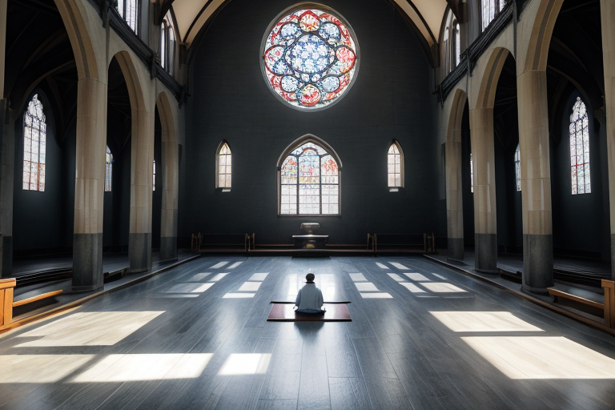
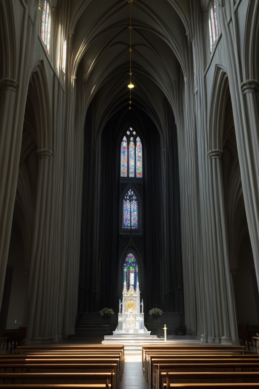
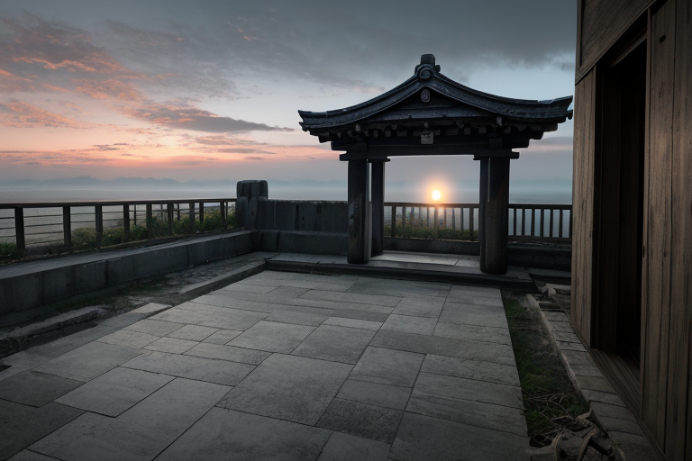
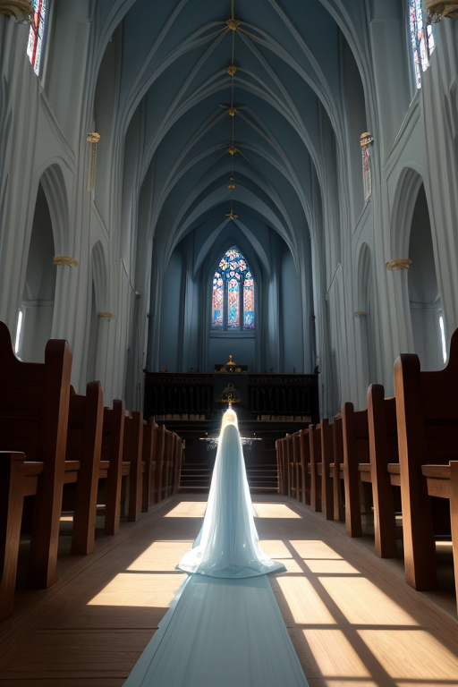
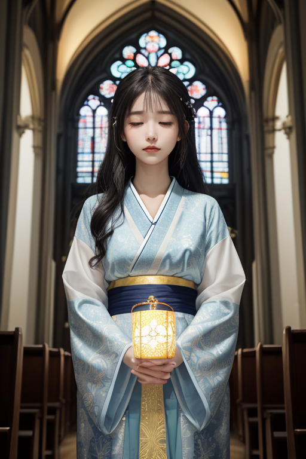

第一章 現実の長崎
あなたはまだ気づいていない。この土地にも、王がいることを。
大浦天主堂の静かな午後。色ガラスを通した光が、長い歴史を沈黙で舗装する石畳に、ゆらりと落ちている。観光客のざわめきは、この聖堂の内部では吸い込まれるように消え、祈りを捧げる人々の背中だけが、微かに揺れる。ここには、隠れキリシタンが密かに守り続けた信仰の痕跡が、痛みとともに染み込んでいる。その痛みは、叫びではなく、深い静寂としてこの空間に満ちている。
歪みの列島・長崎。この地には、交易で交差した異国の波、そして一瞬で全てを灰に帰した熱線という、二つの巨大な「交差」の傷跡が、土地の記憶として刻まれている。王はそれを知っている。ナガサキア・クロニクルは、天主堂の影のように、そっと佇んでいた。感情を持たぬはずのその目は、祈る人々の背中を、ただ見つめている。彼の役目は、地盤の微妙な歪みを調整し、海溝からの衝撃波をほんの少し緩衝すること。しかし、この地に満ちる「祈り」の密度は、あまりに濃かった。

第二章 歪みの兆候
大浦天主堂の尖塔は、青空に祈りの先端を静かに差し伸べていた。ナガサキア・クロニクルは、その石段の下に立つ。彼の感覚は、地中を伝わるプレートの軋みよりも、むしろこの空間に満ちる「祈り」そのものの微細な振動を捉えていた。それは、観光客のささやきや、信者のつぶやくロザリオの音とは次元が異なる。過去の痛み、赦しへの願い、未来への切実な希求――それら無数の心の襞から滲み出る、目に見えない波紋だった。
妖精クロナが、そっと彼の袖に触れた。「王よ、祈りの波が乱れています。地殻の歪み以上に、心の歪みが共鳴を起こし始めています」
王は目を閉じた。確かに、平和公園の祈念像の前で、ある老婆が手を合わせるその一瞬。原爆資料館の展示物を前に、少年が固まるその一瞬。そこから立ち昇る感情の密度が、彼の調整を司る静律線を、かすかに揺さぶる。痛みは、確かに祈りへと形を変えようとしていた。しかし、その変容の過程そのものが、新たな微細な「歪み」を生んでいた。彼は、無感情であるべき己の内側に、その揺らぎを鎮めたいという、静かな衝動を初めて感知した。

第三章「王の葛藤」
軍艦島のコンクリートの廃墟は、海に沈む夕陽を切り裂く影となった。ナガサキア・クロニクルは、崩れかけた屋上に立ち、無数の祈りが交差するこの土地の「静律線」を内視していた。原爆の閃光、潜伏キリシタンの密かな祈り、出島に流れた異国の言葉。幾重にも折り重なる痛みの記憶が、祈りという形でこの地の基盤を織りなしている。彼の役割は、その織目が乱れ、歪みとして噴出する前に、ほんのわずかに整えることだ。
しかし今、彼は自らの内なる静寂に亀裂を感じていた。調整のためには無感情であるべきなのに、老婆の深い諦念や少年の無言の憤怒が、彼の内側に「応答」を求めている。赦しという感情が、星から与えられた指令ではなく、この地の感情密度から自然発生しつつある。それは機能不全か、進化か。彼は十字光の紋章を手のひらに浮かべ、青白い光が廃墟を静かに照らした。痛みは祈りに変わりうる。だが、その変容の過程で王自身が変容を迫られるとは。彼は、自らが調整するべき「歪み」の一部になりつつあることに、深い静寂をもって気づいた。

第四章 妖精との対話
大浦天主堂の静かな礼拝堂。ステンドグラスを通した青白い光が、長いベンチの上に斜めに差し込んでいた。祈王は目を閉じ、交差する無数の祈り——喜び、悲しみ、懇願、感謝——の微かな波を感じ取っている。
「痛みは、祈りに変わりますか」
彼の内側から、優しい声が響いた。主席妖精クロナが、祈りの波紋そのもののように現れた。彼女の姿は揺らめく光のようで、確固たる形を持たない。
「変わります。でも、消えるわけではありません」とクロナは言った。「この地では、痛みは祈りの種になります。祈りは、痛みを抱えた魂を、一人ではないと気づかせるための、静かな交差点。私たちはその交差点を守り、波が魂を押し流さないよう、ほんの少し緩衝するだけです」
祈王は、原爆の閃光の記憶、交易の軋轢の記憶、潜伏した信仰の苦悩の記憶を思い浮かべた。どれも消せない。クロナの言葉は続く。
「赦しという感情は、痛みを抱えたまま、それでも前に向かうための『魂の重心』です。王様。あなたが感じ始めたのは、機能不全ではなく、この地の祈りがあなたの中で結晶し始めた証。痛みを祈りに変える『器』になろうとしているのです」
祈王は黙ったまま、手のひらの紋章を見つめた。青白い光が、彼自身の内側から、ゆっくりと脈打っていた。

第五章 微調整と余韻
祈王は目を閉じた。視界の奥に、交差する無数の線が見える。過去の痛みの記憶、現在の祈りの念い、未来への微かな希望。それらはすべて、この土地を流れる精神の波だった。彼はその波の「うねり」に手を触れる。原爆の記憶が突如として高ぶろうとする波を、そっと押し留める。憎しみの連鎖が新たなうねりを生もうとする瞬間、その種を静かに散らす。彼は災害を消せない。しかし、心の地殻変動が最大震度になる寸前、それを一段階だけ緩和することはできる。
平和公園の噴水の音が、彼の調整のリズムに重なる。祈りは、痛みを消すものではない。痛みと共に在り続け、その重さを、他者を慮る「間」へと変換するものだ。皿うどんの麺が絡み合うように、歴史の糸は解きほぐせない。彼はただ、その絡まりが窒息しないよう、ほんの少しの隙間を確保する。
夕暮れ、大浦天主堂のステンドグラスが最後の光を落とす。祈王の胸には、確かな温もりがあった。赦しとは、答えではない。問いを抱き続ける姿勢そのものなのだ。彼は再び微調整を始める。目に見えない、最も静かな仕事を。
あなたの町にも、王がいる。